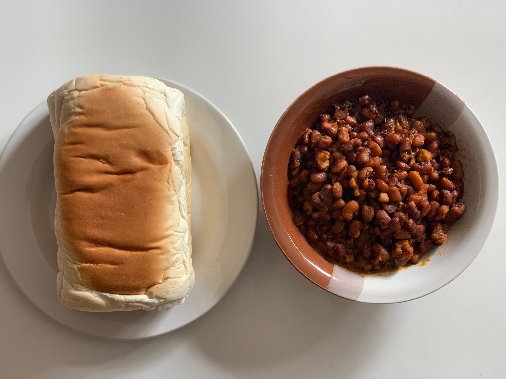

Odin Recipes
Bread and Beans

Description
Bread and beans is a popular and filling meal where cooked beans, often
seasoned
and sometimes mixed with palm oil, onions, and spices, are
served with slices of
bread. The bread can be used to scoop up the
beans or eaten alongside them. It’s a
common and hearty meal enjoyed
for breakfast, lunch, or dinner.
Ingredients
- Beans
- Bread
- Palm oil
- Onions
- Pepper
- Water
Steps
-
Cook the Beans: Soak the beans for a few
hours, then boil them in water until
they are soft. Drain the
water.
-
Season the Beans: In a pot, heat some oil
(palm oil is common). Add chopped
onions,salt, and pepper. Stir in
the cooked beans and simmer for a few minutes
to absorb the
flavours.
-
Serve with Bread: Slice the bread and serve
it alongside the seasoned beans.
You can eat the bread by dipping
it into the beans or enjoying them together
on the plate.
More Recipes
Jollof Rice
Yam and Egg